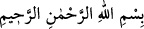

TUHAF MI GELDİ?
Rahmân ve Rahîm olan Allah’ın adıyla.
1. Elif lâm râ. İşte bunlar, o hikmetli kitabın âyetleridir.
2. İçlerinden bir adama: “İnsanları uyar ve inananlara Rab’leri katında kendileri
için (yüksek) bir doğruluk derecesi olduğunu müjdele!” diye vahyetmemiz,
insanlara tuhaf mı geldi? Kâfirler: “Bu, apaçık bir sihirbazdır.” dediler.
“Elif lâm râ.” Açık olan şu ki “Elif lâm râ” bu sûrenin ismidir. Yâni, “Elif lâm râ, bu
sûredir.” veya “Bu sûre, Elif lâm râ’dır.” demektir. Yâni bu sûre bu adla
isimlendirilmiştir. Allah sûrelere dilediği ismi verir. Ebüssuûd (r.h.) da bu görüşü
tercih etmiş ve şöyle demiştir: “Böyle olması başlangıç ifâdesi olmasından daha
doğrudur. Çünkü sûrenin isimlendirilmesi ile ilgili bir bilgi henüz geçmemiştir. Şu
halde sûrenin isminin, muhâtabın bilgisine bağlı olan konu başlığı yapılması değil
bildirilmesi uygun olur. Zikri geçmeden önce ona işâret edilmesi, zikredilmek üzere
olduğu içindir. Onun için de hazır hükmünde olmuştur.”
Fakir (Bursevî) şöyle der: Bil ki harfler kelimelerin, kelimeler cümlelerin, cümleler
âyetlerin, âyetler sûrelerin, sûreler de Kur’an’ın bölümleridir. O halde Kur’an sûrelere,
sûreler âyetlere, âyetler cümlelere, cümleler kelimelere, kelimeler harflere, harfler de
noktalara ayrılır. Tıpkı denizlerin ırmaklara, ırmakların kanallara, kanallardaki suların
da damlalara ayrılması gibi. Şu halde her şeyin aslı bir noktadır. Çokluk ancak o bir
noktanın genişlemesinden ve tafsilâtlanmasından doğmuştur.
“Elif lâm râ” ve benzerleri hakkında zâhir ehlinin görüşü, bunların meydan okumak
için olduğudur. Bu görüş zayıflıktan hâlî değildir. Çünkü bu hurûf-i mukattaanın sahih
delâletleri vardır. Bunlar muhakkık sûfîlerin bilgilerinin özünü teşkil eder. Öncekilerin
ve sonrakilerin ilimlerinin Hz. Peygamber (s.a.)’e verilmiş olduğu sâbittir.[4]
Adem ve İdris (a.s.)’ın ilimlerinden birisi de harflerin ilmidir (ilm-i hurûf). Ancak
Hurûfiyye denilen fırka, işâreti esas alıp ibâreyi terk ettikleri ve hakîkatin elbisesi olan
şeriata hürmeti zedeledikleri için yerilmişlerdir. Nitekim lafız mânânın elbîsesi, ibâre
işâretin zarfı, vücûd da şuhûdun aynasıdır. Bunların hepsi diğerine bağlıdır. Bunlardan